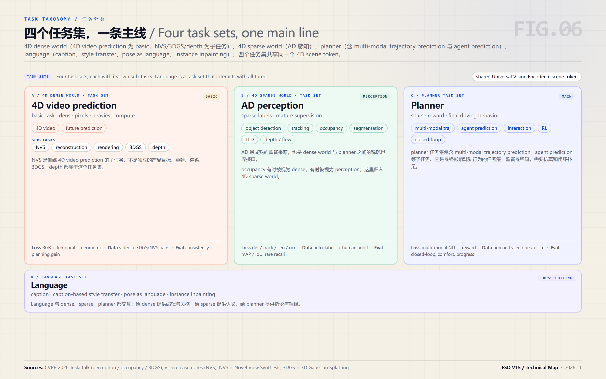
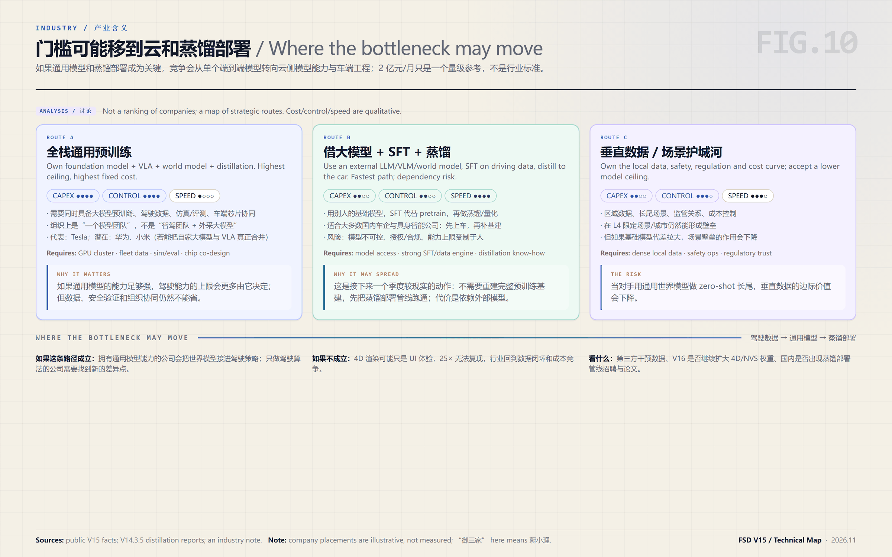

After FSD V15 rolled out over the weekend, many people watched a lot of videos and compared notes; some consensus emerged. This is a narrow look at V15's improvements and implementation. The article focuses on framework design and implementation; for the surface-level experience, watch YouTube.
These are personal notes for record and reference only. Any resemblance is accidental. If readers disagree, they are right. If the implementation happens to resemble some company's approach, it is pure luck.
An outside reading
The material comes from public information, relays of Musk's posts, and media teardowns; it contains no Tesla internal information.
What changed on the surface
A new vision encoder, which Musk calls Universal Vision Encoder (UVE) and which is shared across FSD, Robotaxi, and Optimus. Reality View replaces the old visualization with generated novel views. Musk mentions a 3B action model + 1B renderer, 18 Hz features, 8-frame chunks, and 36 fps. These are mostly second-hand relays of Musk's posts, not release-note text.
What is still open
The full training pipeline; whether Supervised Fine-Tuning (SFT) remains a separate stage; the relationship between 4D video and NVS; whether and how Grok participates; what the reported “10B” refers to; whether NVS improves planning metrics. Public material does not answer these questions.
General pretraining determines driving capability
V15 connects general Vision-Language Model (VLM) pretraining, VLA (Vision-Language-Action) / WAM (World-Action Model) adaptation, and on-car distillation deployment into one line. General large-model pretraining determines V15's driving capability; its significance lies less in “another driving-specific pretrain task” and more in the transfer of general-model capability to the edge.
What shipped
What changed in the driving net
New vision encoder; better signs, small animals, road debris, chains, potholes, deep water; school-zone/weather speed control; slowdown before speed cameras; bike-rack mode; DMS with hats/sunglasses; navigation and parking-route learning. Tesla claims a 25× improvement in critical intervention rate (release-note coverage), but the claim needs third-party data.
Generative reality on the center screen
A virtual camera above the car renders the surrounding world in real time. It is not camera replay and not a game-engine asset library. Tesla calls it “novel view synthesis,” produced by the same end-to-end driving model while it drives. Tap a point to set a target; full-screen or split-screen.
The new encoder is trained on millions of internet videos and shared across FSD, Robotaxi, and Optimus. General large-model pretraining determines V15's driving capability.
One more boundary: V15 is still a supervised release; the driver remains responsible. It shares a stack with Robotaxi, but it is not driverless. Do not read “shared software stack” as “already unmanned.”
From V14 to cloud-to-edge: one possible pipeline
V14 uses three stages: pretrain → SFT → post-train. They belong to one model, not three separate models.

The dimensionality problem V14 faced
By Tesla's public ICCV 2025 / CVPR 2026 framing (CVPR 2026 talk write-up): 7 cameras × 36 Hz × 5 MP × 30 s of history, patchified at 5×5 pixels, is roughly 2 billion input tokens; add navigation, 100 Hz kinematics, and 48 kHz audio. The output is just 2 tokens: steering and acceleration. End-to-end learning is the search for a causal map from 2B to 2.
V14 therefore injects a large set of interpretable intermediate signals: 3D occupancy and flow, vehicles/VRUs, traffic lights and signs, road boundaries and lanes, speed limits, interaction probabilities, and natural-language reasoning. They are both supervision and a handle for safety review.
V14's compact token
According to one engineering description, V14's compact token has two parts: an implicit scene token and some explicit instance tokens (cars, VRUs, traffic lights, lanes). The trajectory head cross-attends to these tokens and outputs a multi-modal trajectory.
Why it worked
Explicit instances are interpretable, easy to supervise, and easy to wrap in safety rules. SFT compresses human value judgments into the policy. Post-train fixes rewards with RL/closed-loop. Each stage had a job.
Where it stalled
The instance list is an information bottleneck (the “chicken vs goose” problem: semantics dropped by the list never come back). SFT narrows the distribution. Post-train is expensive and coupled to the simulator. Temporal view prediction admits 2D shortcuts and does not force 3D consistency.
V14's real legacy is intermediate supervision, not a particular head: make the black box emit inspectable things before it emits an action.V14's real legacy is intermediate supervision, not a particular head.
V15 changes the interface: instance list → 4D scene token, next-frame prediction → novel-view rendering, three stages → general pretrain + distillation deployment.
The pipeline on its own: VLM pretraining → VLA/WAM adaptation → distillation deployment
Unfolding the lower half of FIG.01 gives a three-step chain. It is not an official Tesla flow; it is one reading that puts public claims, relays of Musk's posts, and engineering constraints side by side. Every step still has unknowns.
- Vision-Language Model (VLM) pretraining (cloud): general vision, language, video, and world-model capability. Parameter count, data mix, and whether it comes from Grok are not public. One hypothesis is that Universal Vision Encoder (UVE) is itself part of Grok, possibly after multiple stages of distillation.
- VLA / WAM adaptation: VLA is Vision-Language-Action, connecting vision/language to action; WAM is World-Action Model, the planner task set S01, containing multi-modal trajectory prediction and agent prediction. This layer decides whether general capability becomes driving behavior.
- Distillation deployment (car): distill the cloud teacher into a 4B on-car graph (about 3B action + 1B renderer), then quantize, prune, fuse operators, and deploy on AI4. Distillation and deployment are one step, not “distill first, then deploy.”
Each link has blanks: the UVE–Grok relationship, the scope of the reported 10B, whether SFT remains separate, whether 4B is the full on-car graph. The dashed lines and question marks are there to keep those blanks, not to fill them with answers.
One encoder, two decoding paths?
The structure below comes from second-hand relays of Musk's posts and media teardowns, not an official Tesla architecture diagram. Public information supports only a few points: a shared Universal Vision Encoder (UVE), a ~3B action model, a ~1B renderer, and 18 Hz features. We use it to explain one possible runtime structure, not as a confirmed training graph.

Unfolding that forward pass into a network gives the two towers below: a 3B action tower for planning and control, and a 1B render tower for novel views.

UVE: Universal Vision Encoder, a general “visual clock”
UVE (Universal Vision Encoder) emits features at 18 Hz. FSD, Robotaxi, and Optimus share the encoder. The 18 Hz figure comes from second-hand relays of Musk's posts, not the release notes. It is pretrained on millions of internet videos for general vision, then aligned to driving on fleet data. A reasonable inference is that the encoder becomes sensitive not only to “driving-relevant objects,” but to the general world—materials, lighting, animals, debris, occlusion.
If the shared-feature fork holds, why it matters
According to the second-hand account, the 3B action model and the 1B renderer both fork from Universal Vision Encoder (UVE) features. If that description is accurate, the renderer is not an independent video pipeline pasted on top; it conditions on the same scene representation to generate a novel view. As a result, rendering loss may flow back into UVE, forcing the features to satisfy two things at once:
- Action discriminability: details that should change braking cannot be thrown away;
- Rendering consistency: occlusion, depth, dynamics, and lighting must be coherent from a new viewpoint.
That is what “shared representation” buys over “add another generative model”: it does not just add an output; it adds a constraint.
The 1B renderer: what conditional mean-flow means
According to the second-hand description, the renderer is a 1B conditional mean-flow model (a flow-matching variant that learns the average velocity field over an interval). It is conditioned on UVE features, takes the previous frame plus noise, and outputs the current view. It does not rebuild a full frame from scratch; it predicts the change, which cuts tokens, NFEs, and compute.
The same relay mentions an 8-frame chunk spread over 4 UVE cycles and a 36 fps target. There is no reliable public glass-to-glass latency.
“½ TRIP” means half of one TRIP accelerator, not half of an AI4 chip. How much of a full chip that represents cannot be calculated from public information. The only usable statement is that it spends spare compute, not the control loop's budget.
4B, 10B, Grok: three different layers
On-vehicle action model
Size: 3B
Evidence: Musk post
Note: Outputs trajectory/control with auxiliary heads.
On-vehicle renderer
Size: 1B
Evidence: Musk post
Note: NVS decoder, conditional mean-flow.
On-vehicle graph
Size: 4B
Evidence: Sum
Note: 3B + 1B; whether other heads/models exist is unspecified.
Reported “10B”
Size: ~10B
Evidence: Media
Note: Scope undefined and inconsistent with 3B+1B. This note does not treat it as the teacher.
Grok / general model
Size: Far larger than 10B
Evidence: Magnitude judgment
Note: Exact size not public; whether/how it participates in V15 training is unresolved.
Full system
Size: Unknown
Evidence: Open
Note: With a data engine, simulator, or other experts, “total parameters” is not meaningful.
The safer reading: 4B is the on-car inference graph; 10B is a media number with unclear scope; Grok is a different order of model. There is no basis for treating 10B as Grok or as the cloud teacher, and treating 4B as “all of V15” ignores the cloud and tooling.
Beyond driving-specific pretraining
V15's change lies not in “a few more driving-pretrain tasks,” but in general VLM pretraining: general large-model pretraining determines V15's driving capability, and enters the car through VLA/WAM adaptation and distillation deployment.
VLM already does world modeling in the cloud
Video generation, 4D scene generation, and world models already exist in general VLM/video models; they are not inventions unique to autonomous driving. For driving, the hard part is making those capabilities deployable on the car, verifiable in a closed loop, and safe enough to fall back. If Tesla has done that, the value is not “inventing 4D video” but “connecting general-model pretraining to the edge.”
VLA and WAM may be two ends of one line
VLA emphasizes vision/language-to-action mapping; WAM emphasizes a world model plus a planner (WAM S01). They used to look like two routes, but inside a “general pretrain → on-car distillation deployment” frame they look more like different interfaces and losses of one model: VLA turns intent into action, WAM predicts the world and evaluates actions. V15 may be showing a convergence, not a competition between two paradigms.
General capability in the cloud
VLM/video/world models provide vision, physical priors, and generation. This part was not invented for driving.
VLA/WAM adaptation
Connect general representations to driving actions, trajectories, and world prediction. Driving data does its work here.
Distill and deploy to the car
Distillation, quantization, and deployment engineering are parts of one distillation deployment step, not three separate stages.
Where does Grok sit?
Grok is a general model far larger than 10B. One open hypothesis is that Universal Vision Encoder (UVE) is itself part of Grok, possibly after multi-stage distillation. Public information does not describe the actual link between Grok and FSD.
Is SFT still there?
Public information is not enough to decide whether SFT remains a separate stage. A safer statement: if planning is already inside general pretraining, the final supervised stretch on high-quality driving data may become an annealing/alignment interval. But that is inference, not fact. Treating “V15 removed SFT” as a conclusion is not supported.
The impact on autonomy comes from general-model pretraining moving down to the edge, not from autonomous driving inventing a pretraining method that changes how LLMs are trained.
4D video prediction is the basic task; NVS is a sub-task under it
One engineering framing is this: 4D video is not a task invented by V15—general VLM/video models already do it. For a driving model it is more like a basic task. Novel View Synthesis (NVS) is not a separate primary objective; it is a sub-task inside the 4D dense set used to train 4D video prediction, alongside reconstruction, rendering, 3D Gaussian Splatting (3DGS), and depth. This note calls the set 4D dense world.

Why NVS helps 4D video prediction
Temporal view prediction (predict the next frame from past frames) admits a 2D shortcut: learn “copy + local warp” and the loss drops on most frames without 3D understanding. NVS is different: given a camera pose the model has never seen, render that view. To do it well, the model must implicitly learn depth, occlusion, object backsides, and dynamic consistency. It is therefore a harder auxiliary signal.
4D video prediction
Predict future video/scene evolution; the main task of 4D dense world, not a V15 invention.
NVS / reconstruction / 3DGS / depth
Force the representation to encode 3D/4D consistency; training tools, not the final product.
The data loop: from fleet logs to NVS pairs
- Fleet logs: 7 cameras, 36 Hz, 30 s clips; every frame has ego pose and camera extrinsics.
- Trajectory / pose: ego trajectory and camera pose condition the NVS; they can be discretized into tokens or verbalized as text.
- 3DGS reconstruction: dynamic-aware Gaussian reconstruction along the trajectory; Tesla has publicly discussed generative 3D Gaussian at ~220 ms (ICCV 2025 analysis).
- Novel-view rendering: sample virtual cameras in space (left/right/up/down) and time (past/future frames); render RGB, depth, segmentation, flow.
- Training pairs: feed condition (pose/language) + target (new view) into UVE/scene token as an auxiliary 4D dense world task.
The economics are strong: one capture, many supervisions. A 30-second log no longer yields only one human trajectory; it can yield hundreds of NVS pairs. That is what “turning miles into infinite views” means.
Pose as language
One engineering discussion points out that “pose itself is a language input,” which is important. Camera pose can be encoded as text or discrete tokens, e.g., “move the camera 3 m forward, 1.5 m up, look 20° left.” Then the same scene token is queried by two conditions:
- Action condition: where the ego vehicle will go;
- Camera condition: from which virtual viewpoint to look at the world.
Language is not “explanation”; it is a general condition interface. It lets NVS, video generation, scene editing, and even counterfactual rollout share one syntax.
A “local world model” is not a cloud simulator
The 1B renderer is a local world model: short horizon, conditional, view-consistent. It runs in real time on the car, but it is not the cloud neural simulator that can roll out indefinitely, inject adversarial scenes, and evaluate closed-loop policies. They are different scales of the same family:
Horizon
On-car 1B renderer: 8-frame chunks / short
Cloud world simulator: Long-horizon rollout
Conditioning
On-car 1B renderer: Universal Vision Encoder (UVE) features + previous frame + pose
Cloud world simulator: State + action + scene edits
Use
On-car 1B renderer: Reality View, NVS supervision
Cloud world simulator: Closed-loop eval, RL, adversarial data
Compute
On-car 1B renderer: ½ TRIP per UVE frame
Cloud world simulator: Data-center scale
GS quality, dynamic objects, occlusions, and lighting all affect NVS. The model may hallucinate details in occluded regions. Good NVS metrics do not prove better planning metrics—this is exactly what V15 still has to demonstrate publicly.
Compact token: from an instance list to a 4D scene
V14's compact token was “implicit scene + explicit instances.” V15 likely shifts the center of gravity to the implicit scene and demotes instances from “interface” to “optional query.” This is not an aesthetic choice; NVS forces it.

V14: instances were both the interface and the bottleneck
Explicit instances are obviously useful: interpretable, easy to supervise, easy to wrap in safety rules, easy to visualize. They are also an information bottleneck. Perception emits boxes for “chicken” and “goose”; planning needs to know “the chicken is crossing (wait)” versus “the goose is idle by the road (go around).” Once that semantics is lost in the instance list, no downstream network can recover it.
The list is also variable-length: different scenes have different numbers of cars, people, and lights. Cross-attending over it makes the compute graph scene-dependent, which is bad for deterministic latency.
V15: the scene is the interface, instances are queries
The more likely V15 direction: a fixed-size 4D scene token as the primary interface, with instances becoming optional heads queried from that token. Three direct benefits:
- Denser representation: 4D NVS forces the scene token to encode geometry, appearance, and dynamics. Planning gets a queryable world, not an object list.
- More stable compute: fixed-size tensors make attention cheaper and latency more predictable; no variable-length list.
- Prunable inference: auxiliary heads (perception, language, visualization) can be turned off or run at a lower rate on the car, leaving the main line and renderer.
“Weaken instances” is not “delete instances”
The rigorous phrasing is: instances move from “interface” to “query.” Training still needs instance supervision (detection, tracking, segmentation, occupancy), or safety validation fails. But those heads can decode from the scene token rather than acting as a separate token set for planning. At inference, they can be pruned or run asynchronously.
This yields an observable prediction: V15's visualization should show fewer traditional boxes/icons and more dense, generative scenes. That does not mean perception heads vanished; it means they no longer sit at the center of the planning interface.
A fixed-size scene token plus direct cross-attention is easier to kernel-fuse, cache, and make deterministic than a variable-length instance list with multi-stage fusion. The renderer can also be scheduled on spare compute—precisely the premise behind “½ TRIP.”
Three task sets: dense world, sparse world, planner
One engineering framing groups driving-related work into three task sets: 4D dense world (4D video prediction is the basic large task; NVS, 3DGS, depth, reconstruction, and rendering are dense-WM sub-tasks inside the same set), 4D sparse world (the AD perception task set), and planner (WAM S01, containing multi-modal trajectory prediction, agent prediction, and related sub-tasks). Language/VLM is better treated as an interface and debugging layer, not a task set.

How the three task sets divide work
4D video prediction
4D video prediction is the basic large task in this set; NVS, 3DGS, depth, reconstruction, and rendering are dense-WM sub-tasks under it. It is not a V15 invention; general VLM/video models already have similar capabilities.
AD perception
Detection/tracking, traffic lights/signs, instance/semantic/occupancy segmentation, depth/flow form the sparse-world task set. It is the most mature supervision source and the sparse interface between dense world and planner.
WAM S01
The planner is the task set corresponding to WAM S01; it contains multi-modal trajectory prediction, agent prediction, and related interaction/RL/closed-loop sub-tasks. It ultimately changes driving behavior.
Language is not a fourth task set. It is a condition interface (pose as language, commands, CoT) and a debugging/data tool (captions, retrieval, failure attribution). Making it a separate “dense VLM task” blurs the main line and makes the taxonomy look tidier than it is.
One clip, three task sets
Putting three task sets in one training run only works if data-task pairing is fine-grained. One 30-second clip can yield:
4D video prediction
Source: Fleet clip + internet video
Label / condition: Future frames, time offset, scene evolution
Purpose: Basic large task of the 4D dense world set
NVS / 3DGS / depth
Source: Fleet clip + 3DGS reconstruction
Label / condition: Novel camera pose, RGB/depth/seg
Purpose: Dense-WM sub-tasks inside the 4D dense world set
4D sparse world
Source: Fleet clip + auto/human labels
Label / condition: Boxes, tracks, masks, occupancy, depth
Purpose: AD perception task set; safety and distillation supervision
Planner
Source: Human trajectories + simulation
Label / condition: Multi-modal futures, agent interaction, reward, interventions
Purpose: WAM S01 task set: multi-modal trajectory prediction + agent prediction
Language / VLM
Source: VLM captions + human review
Label / condition: Scene descriptions, decision reasons, QA
Purpose: Interface, retrieval, debugging; not a task set
Putting the three task sets back into the training system gives the framework below. It is a possible chain: general VLM/world-model pretraining → three-task-set adaptation → distillation deployment to the car. Whether SFT remains a separate stage is not public, so the diagram marks it as unknown.

Order and weights
One possible sequence:
- General VLM/world-model warm-up: internet video, general 4D/video prediction, world priors;
- 4D dense + sparse: fleet 4D video, NVS/3DGS/depth, AD perception labels;
- Planner: multi-modal trajectories, interaction, closed-loop/RL curriculum;
- Distillation deployment: distillation, quantization, and deployment engineering as one step.
The order is not fixed; one can mix throughout and only change weights. Whether SFT is still a separate stage is not public, so it should not be treated as settled.
Difficulties
The three task sets compete for capacity: 4D dense consumes decoder compute, sparse world pulls resolution up, and planner demands low latency. The real difficulty is balance and evaluation: if NVS metrics rise but planning metrics do not, it remains an auxiliary task.
However the tasks are merged, the planner is what ultimately changes driving behavior. 4D dense world is basic/auxiliary; 4D sparse world is the perception interface. The scorecard is still intervention rate, comfort, progress, and closed-loop safety—not rendering quality.
Where post-train fits: absorbed, or still separate?
One claim is this: if the 4D video generator is already a usable pretrain simulator, post-train can be absorbed too—RL, interaction, closed-loop, and extrapolation become auxiliary to multi-modal trajectory prediction. The direction is sound; the boundary is blurrier than “absorption.”

Why V14's post-train was separate
Because the simulator and the policy were two different things: the policy learned from real data, then RL/closed-loop evaluation ran in a simulator; the simulator generated states, the policy generated actions, and they exchanged data through an interface. That interface was both an engineering boundary and an organizational one.
If the V15 renderer can generate counterfactual futures conditioned on actions, it is no longer replay—it could be an interactive local simulator. The policy could then roll out inside the same model family, and RL/interaction/closed-loop/extrapolation could become auxiliary tasks trained alongside trajectory prediction. This is a possibility, not a confirmed design.
A more precise word: curriculum
This is not “post-train disappears”; it is “post-train becomes a late curriculum inside pretrain.” The differences:
- Data: from offline state-action pairs to online/semi-online rollouts plus a real-fleet anchor;
- Objective: from imitation to imitation + reward + safety constraints + interaction consistency;
- Schedule: not “pretrain, then post-train,” but “increase RL/closed-loop weight in a certain interval of pretrain.”
If this holds, V15's paradigm is indeed two-stage. But “post-train” as a function still exists; it is reallocated into the pretrain curriculum and the distillation fine-tune.
Four hard constraints
Simulator fidelity
Looking real is not the same as being physically correct. Collisions, occlusion, lighting, and other agents' reactions can all fool the policy.
Reward hacking
The policy will find reward loopholes. Real interventions, collisions, comfort, and rule constraints must anchor the reward.
Distribution shift
In a closed loop, the policy drifts into states it generated itself. Real fleet data must recalibrate continuously.
Compute cost
Closed-loop rollout is an order of magnitude more expensive than supervised learning. “Absorbed” is not free; it may just move the bill from post-train to pretrain.
If the 4D generator can only replay trajectories seen in training, it is a renderer, not a simulator. If it accepts counterfactual actions (“what if we turn left here?”) and produces physically plausible, temporally coherent futures, it can carry post-train. That is the technical watershed to watch.
Distillation deployment: one step, not two stages
One engineering view treats distillation and deployment as one step, called distillation deployment. This note accepts that: moving cloud capability into a 4B on-car graph—distillation, quantization, pruning, operator fusion, latency engineering—is one process, not “distill first, deploy later.”

Why a deep DiT at low resolution
One engineering note observes that the DiT stack is deep but the resolution is modest, and that spatial/temporal super-resolution are “easy external tricks.” This matches the logic of spending capacity on semantics and temporal consistency, then letting the product layer handle pixels:
- Semantics first: scene understanding, occlusion, dynamics need depth;
- Pixels later: UI resolution can be upscaled spatially; frame rate can be filled temporally;
- Compute under control: generate low-res + external SR is cheaper than end-to-end high-res, and easier to make deterministic.
These are engineering add-ons that do not change training, but they decide whether users see “a blurry 4B” or something usable. Product differences often live here.
There is no reliable public glass-to-glass latency. The only quotable details are the second-hand 18 Hz feature rate, 8-frame chunks, and 36 fps target; they are not official release-note metrics.
What distillation deployment includes
If V15's path is “general pretraining → on-car distillation deployment,” the step includes at least three layers:
- Capability/representation: Universal Vision Encoder (UVE) and scene-token intermediates, so the student learns how the teacher sees the world;
- Task structure: weights over the three task sets, data-task pairing, training order;
- Deployment: quantization, pruning, operator fusion, deterministic latency.
Therefore, reusing the pretrain task/data mix matters: distillation deployment does not teach a 4B student from scratch; it makes the student imitate the cloud model inside a validated task distribution. How large the cloud model is, whether it is Grok, whether it is 10B—none of that is public enough to conclude here.
Capability distillation
Cloud → student: features, logits, rendering, trajectory, uncertainty. Goal: the same tasks, not fewer parameters.
Representation quantization
FP32 → FP16/INT8/FP8, QAT (Quantization-Aware Training), pruning, operator fusion. Goal: the same capability at lower bandwidth/power.
Four product-layer add-ons
- Spatial SR: upscale low-res rendering to UI resolution;
- Temporal SR / frame interpolation: smooth chunk boundaries and preserve a 36 fps feel;
- Occlusion fill: plausible inference in camera blind spots, not replay;
- UI compositing and fallback: trajectory arrows, clickable targets, map overlay; safe fallback if rendering fails.
These do not change training, but they change the product. They are also part of why Tesla got there first: not algorithm alone, but algorithm + chip + cockpit + product team tuning together.
Industry impact: the bottleneck may move to cloud and distillation deployment
Under that view, competition shifts from “does a company have an end-to-end model?” to two questions: access to a strong enough general model, and the ability to distill and deploy it on the car reliably.

What RMB 200M/month buys
“RMB 200M/month” is an industry order-of-magnitude estimate, not an accounting line or an industry standard. It roughly corresponds to four cost buckets:
Compute
Depreciation or rental of a thousand-to-ten-thousand-GPU cluster, networking, storage, training frameworks, fault tolerance. Pretraining bills live here.
Data and labeling
Fleet upload, cleaning, auto-labeling, human audit, 3DGS reconstruction, synthetic scenes. The data engine is easy to underestimate.
Talent
Foundation-model pretraining, world models, driving planning, chip co-design, evaluation—a cross-disciplinary team that can work together.
Evaluation and closed loop
Neural simulators, closed-loop RL, safety validation, regulatory dialogue. Without evaluation, pretraining is “bigger,” not necessarily “better.”
Three routes
Route A: full-stack general pretraining. Own the foundation model, VLA, world model, and distillation deployment pipeline. Highest ceiling, highest fixed cost. Tesla is the reference; Huawei or Xiaomi could qualify if they truly merge their foundation models with VLA. But “having a model” is not the same as “having driving data, safety validation, and organizational coordination.”
Route B: borrow a model + SFT + distillation deployment. Use an external LLM/VLM/world model, replace full pretraining with SFT, then distill/quantize. This is the more realistic move for most Chinese automakers and embodied-AI companies: no need to rebuild pretraining infrastructure; get the distillation deployment pipeline working first. The price is model dependence, licensing/compliance risk, and a ceiling set by someone else.
Route C: vertical data/scenarios. Regional data, long-tail scenes, regulatory relationships, cost control. This still creates an advantage in limited L4 scenarios/cities; but if the foundation-model gap widens, the value of that advantage falls.
蔚小理, Huawei, Xiaomi: separate narrative from fact
“御三家” means NIO, XPeng, Li Auto. All three invest heavily, but their paths differ: XPeng has released positive signals around end-to-end/VLA; NIO has just released a new generation; Li Auto's pretrain is not identical to the “general pretrain” defined here, with more emphasis on a production closed loop/world model. These are market narratives, not audited data; this note does not treat specific amounts or rankings as fact.
The potential advantage for Huawei and Xiaomi is the combination of their own foundation model + their own cars/chips/channels. If they can combine a general model with VLA and reuse a cloud training/distillation deployment pipeline, it will pressure companies that only do driving algorithms. But the hard part is not only the model; it is the driving data loop, functional safety, organizational coordination, and regulation. If any link fails, it can look formidable and still land slowly.
VLA and WAM may be one line
VLA (Vision-Language-Action) emphasizes language as input/output; WAM (World-Action Model) emphasizes a world model plus action. They used to look like two routes, but inside “general pretrain → on-car distillation deployment” they look more like different interfaces and losses of one model:
- Language remains an interface (pose as language, CoT, captions);
- The world model is not an add-on; it is part of the shared representation (the NVS renderer);
- Action is not only imitation; it is also optimized by rollout/reward inside the world model.
So “VLA and WAM merge” more precisely means: they may be different losses/interfaces of the same model. That is also why “borrow a big model + SFT instead of full pretraining + distillation deployment” becomes a realistic next-quarter choice for some companies—not because it is optimal, but because it is fastest.
Public evidence supports a distillation deployment pipeline, a 4B on-car graph, and a reported Robotaxi→HW4 distillation.
For most companies, the realistic strategy is not “chase a RMB 200M/month pretrain,” but “pick a strong enough foundation model, push SFT and distillation deployment to the limit, and defend the scene with vertical data.” This widens the ceiling gap with Tesla, but may get a product out first. The risk: when competitors use general world models for zero-shot long-tail, the marginal value of vertical data falls.
Falsifiable checks
A technical judgment is only useful if it can be proven wrong. These are the checks worth watching over the next one to two quarters.

01
Check: Universal Vision Encoder (UVE) / 18 Hz provenance: can the original Musk post or an official document be found?
If true: The technical description has a firmer basis.
If false: The numbers remain second-hand; treat them as provisional.
02
Check: 4B / 10B / Grok scope: what does 10B measure, and is it being confused with Grok?
If true: The model-size ladder can be stated cleanly.
If false: The “10B teacher” story is unsupported; drop it.
03
Check: Does SFT remain a separate stage? Will V16 show a pipeline with or without it?
If true: We can say whether SFT was absorbed or retained.
If false: SFT remains; the “stage collapse” is only partial.
04
Check: Is NVS auxiliary to 4D video prediction? Does Tesla describe it that way?
If true: The three-family taxonomy is closer to Tesla's actual training.
If false: NVS is a main task or a product feature, not an auxiliary.
05
Check: Is there a cloud-to-edge pipeline? Does Tesla show the same model family in cloud and car?
If true: The central argument gains support.
If false: It is two separate models; “cloud-to-edge” is narrative.
06
Check: 25× baseline and third-party data: is the critical-intervention improvement reproducible?
If true: V15 is a real capability jump, not just a visual upgrade.
If false: It falls back to a smaller improvement; V15 was overhyped.
07
Check: Do Chinese players post distillation-deployment jobs/papers/releases? Is “borrow + SFT + compress” a wave?
If true: The industry thesis holds.
If false: Companies keep building full pretrain, or routes fragment.
08
Check: Do Huawei/Xiaomi merge foundation models with VLA? Is there a unified on-car model?
If true: The competitive pressure becomes real.
If false: Organization/data/safety barriers are harder than the model.
A structural shift
General-model capability and distillation deployment become the main axis; driving-specific pretraining matters less on its own; companies without access to a strong model or a distillation deployment pipeline fall behind faster.
An experience upgrade
Reality View is impressive, but the driving gains are limited; the industry returns to data loops, cost, and safety validation; the general-pretrain narrative cools.
Glossary
Names and numbers
Universal Vision Encoder (UVE)
Source and confidence: Relay of Musk post
What it may mean, and where it is misread: Universal Vision Encoder: a general vision encoder that compresses continuous camera frames into features, shared across FSD, Robotaxi, and Optimus. The release notes say only “vision encoder,” not the full name.
18 Hz
Source and confidence: Relay of Musk post
What it may mean, and where it is misread: The Universal Vision Encoder (UVE) feature rate, not the camera frame rate and not the final display frame rate. Musk also mentions 8 frames per generation, a 36 fps target, and spreading generation over four cycles.
3B + 1B / 4B
Source and confidence: Relay of Musk post
What it may mean, and where it is misread: About 3B for the driving-action model plus about 1B for the renderer, roughly 4B, as the on-car inference graph. Widely repeated, but still worth an official document.
10B
Source and confidence: Media report
What it may mean, and where it is misread: Some media say V15 grew from ~1B to ~10B, without defining the scope, and it conflicts with Musk's 3B+1B. This note treats it as a media number with no clear scope, not as the teacher model, and does not conflate it with Grok.
Grok
Source and confidence: Open
What it may mean, and where it is misread: Grok is a different order of general model, far larger than 10B. One open hypothesis is that Universal Vision Encoder (UVE) is itself part of Grok, possibly after multi-stage distillation; public information does not specify how it participates.
25× critical intervention rate
Source and confidence: Official framing
What it may mean, and where it is misread: It is the improvement in “critical intervention rate” versus V14, not “25× safer,” and not “25% better.” Tesla has not published the V14 baseline or a full definition.
8 frames / 4 cycles
Source and confidence: Relay of Musk post
What it may mean, and where it is misread: The renderer generates in chunks spread over four Universal Vision Encoder cycles; Musk mentions a 36 fps target. These are second-hand. There is no reliable public glass-to-glass latency.
½ TRIP compute
Source and confidence: Musk's claim
What it may mean, and where it is misread: Half of one TRIP accelerator, not half of an AI4 chip. How much of a full chip that represents cannot be calculated from public information.
HW4 only
Source and confidence: Official
What it may mean, and where it is misread: V15 runs on AI4/HW4; HW3 stays on the v14 Lite branch.
Where the numbers come from: Universal Vision Encoder (UVE), 18 Hz, 3B+1B, 8 frames, 36 fps, and ½ TRIP come from a Sina relay of Musk's posts (2026-11-22); 10B comes from a TechWeb report (2026-11-23); 25× comes from Sohu/Global Times coverage of the release notes (2026-11-22); HW4 support comes from the same coverage. None of these is a verbatim Tesla technical document.
Universal Vision Encoder (UVE)
Universal Vision Encoder. Shared by FSD, Robotaxi, and Optimus in V15; emits features at 18 Hz. Source: second-hand relay of Musk's posts, not release notes.
VLA
Vision-Language-Action. A paradigm with vision as input, language as intermediate/output, and action as the target.
WAM
World-Action Model. A world-model-centric paradigm with action as output; converging with VLA.
NVS
Novel View Synthesis. Render a scene from a new camera pose; 4D NVS also requires temporal consistency.
3DGS
3D Gaussian Splatting. Represent a scene with many Gaussian ellipsoids; differentiable, fast, supports dynamic objects.
DiT
Diffusion Transformer. A Transformer backbone for diffusion/flow-matching denoising.
Mean-flow
A flow-matching variant that learns an average velocity field over an interval; fewer NFEs, better for low-latency car deployment.
Compact token
The intermediate interface in V14/V15. V14: implicit scene + explicit instances; V15: more 4D-scene-centric.
SFT
Supervised Fine-Tuning on high-quality driving data; V15 may absorb it as a pretrain annealing interval.
RL / closed loop
Reinforcement learning and closed-loop evaluation. Roll out in simulation/world model, optimize with reward and safety constraints.
Distillation
Transferring a large teacher's capability (features, outputs, task structure) into a smaller student.
QAT / quantization
Quantization-Aware Training. Simulate low precision during training, deploy as INT8/FP8 to cut bandwidth/power.
TRIP
A neural-network accelerator block in Tesla's AI4 chip. Reality View uses “half a TRIP,” not half an AI4.
MPCI
Miles Per Critical Intervention. V15's 25× refers to this metric relative to V14.
Sources and notes
Main sources
- Tesla FSD V15 rollout and release notes, Sohu/Global Times, 2026-11-22: link
- Reality View, generative rendering, and compute, ZOL, 2026-11-23: link
- FSD V15 vision encoder / Reality View teardown, OFweek, 2026-11-23: link
- Relay of Musk's posts: UVE full name (Universal Vision Encoder), 18 Hz, 3B/1B, 8 frames / 36 fps, ½ TRIP, Sina/Weibo, 2026-11-22: link
- Tesla CVPR 2026 talk (general robotics foundation model, intermediate outputs, World Sim NN), OFweek, 2026-06-05: link
- Tesla ICCV 2025 talk analysis (2B tokens, 3DGS, language reasoning), Woshipm, 2025-12-22: link
- Public-post teardown of UVE / 3B / 1B fork, 18 Hz, 8-frame chunks, Weibo, 2026-11-22: link
- Musk reply on “3B + 1B” (screenshot) and discussion, Weibo, 2026-11-22: link
- V15 “10B / 25× / architecture rebuild” report, TechWeb, 2026-11-23: link
- V14.3.5 unified model and Robotaxi→HW4 distillation report, News18a, 2026-07-21: link
- FSD V15 reaction and 25× / industry analysis, Sohu Auto, 2026-11-23: link
On 10B: item 8 is a media number that conflicts with Musk's 3B+1B. It should be treated as a report with unclear scope, not as the teacher model. Grok is a different order of general model; its exact size is not public.
How the 11 theses were handled
These 11 claims no longer have a standalone section. They sit in Appendix A at the end, each with an evidence level. Conflicts with public information (e.g., “Grok directly co-trains,” “10B vs 4B”) are separated by scope; claims without public evidence (e.g., “remove SFT,” “weaken instance tokens,” “external SR”) are marked as inference with falsifiable checks.
Citation and updates
Cite as: A Narrow View of FSD V15, 2026-11-23, v1.2. Open items include: UVE pretraining data mix, 4D video/NVS training conditions, compact-token structure, and distillation deployment-pipeline configuration.
Version: v1.2 · 2026-11-23 · Chinese/English · 11 figures · single-file HTML.
Disclaimer: Not investment advice. Company/route judgments are the author's analysis, not any company's official position.
Appendix: the 11 theses, audited
The 11 claims are listed below with an assessment and section references.
01
Claim (short): Grok trains together with FSD; V14's VLA pretrain becomes V15's general pretrain
Verdict: Open
General-pretrain direction is discussable; direct Grok co-training has no public evidence
Evidence / note: UVE (Universal Vision Encoder) is trained on internet video and shared across FSD/Robotaxi/Optimus, per second-hand relays of Musk's posts. Grok is a different order of model; its role is unspecified. See §04.
02
Claim (short): SFT still uses driving data
Verdict: Partial
The data is likely used; whether SFT is a separate stage is unknown
Evidence / note: V15 notes still emphasize fleet data and driving behavior, but there is no public pipeline showing whether SFT disappeared. See §04.
03
Claim (short): 4D video generation gets more weight; a local world model supports NVS; training data is GS reconstruction along the trajectory
Verdict: Directionally plausible
4D video is basic; NVS is a sub-task in the 4D dense set; the recipe is inferred
Evidence / note: Tesla says “novel view synthesis” and “3D Gaussian.” 4D video is not new to V15; NVS is one sub-task used to train it. See §05.
04
Claim (short): V14's framework is unchanged; V15 may remove SFT and re-pair data and tasks
Verdict: Open
“Stage merge” is an inference
Evidence / note: No official pipeline diagram. Whether planning is inside general pretraining and whether SFT remains cannot be confirmed publicly. See §07.
05
Claim (short): Compact token = implicit scene + explicit instance; V15 weakens instances and strengthens the implicit token via 4D NVS
Verdict: Reasonable inference
Consistent with NVS economics, unconfirmed
Evidence / note: The V14 compact-token description comes from one engineering account; Tesla has not published V15 token details. NVS is a sub-task, not the sole driver. See §06.
06
Claim (short): The trajectory head barely changes; interaction with the scene token enables acceleration; auxiliary tasks can be removed at inference
Verdict: Reasonable inference
A fixed-size scene token is cheaper
Evidence / note: Latency and compute constraints support pruning; the head structure is not public. See §06.
07
Claim (short): Without SFT, tasks merge into four families: dense VLM/4D generation, perception, planning (original claim)
Verdict: Revised
three task sets: 4D dense, 4D sparse, planner
Evidence / note: 4D video is the basic large task of the 4D dense set, with NVS/3DGS/depth as sub-tasks in the same set; AD perception is the sparse set; planner is WAM S01 (multi-modal trajectory prediction + agent prediction). Language/VLM is an interface, not a task set. See §07.
08
Claim (short): Post-train can be absorbed into pretrain; RL / interaction / closed-loop / extrapolation become auxiliary to trajectory prediction
Verdict: Directionally plausible
the boundary is blurrier than “absorbed”
Evidence / note: CVPR 2026 shows a World Sim NN ↔ Policy NN loop; full absorption is not confirmed. See §08.
09
Claim (short): 3B + 1B; a deep DiT at modest resolution; spatial/temporal super-resolution are engineering add-ons
Verdict: 3+1B stands
10B scope unclear; low-res + SR is an inference
Evidence / note: Musk's post (second-hand) gives 3B/1B; the “10B” media number conflicts with it; Grok is far larger than 10B. SR is not officially confirmed. See §09.
10
Claim (short): The paradigm moves from pretrain → SFT → post-train to pretrain → distillation; big model to 4B; reuse task/data mix; quantize for deployment
Verdict: Directionally supported
distillation deployment is one step
Evidence / note: V14.3.5 has a reported Robotaxi→HW4 distillation; whether the cloud-to-edge loop is closed is not public. See §09.
11
Claim (short): Only a few Chinese companies can spend RMB 200M/month on pretrain; the 蔚小理 / Huawei / Xiaomi landscape; VLA and WAM merge; borrow a big model + SFT + distill is the next-quarter play
Verdict: Opinion / analysis
logical, but company claims are not facts
Evidence / note: Industry analysis, not audited data. RMB 200M/month is an order-of-magnitude reference, not a standard; company positions are illustrative. See §10.
“True” means consistent with public information. “Reasonable inference” means no direct evidence but supported by architecture and engineering constraints. “Opinion” is a judgment in industry discussion and should not be cited as fact.